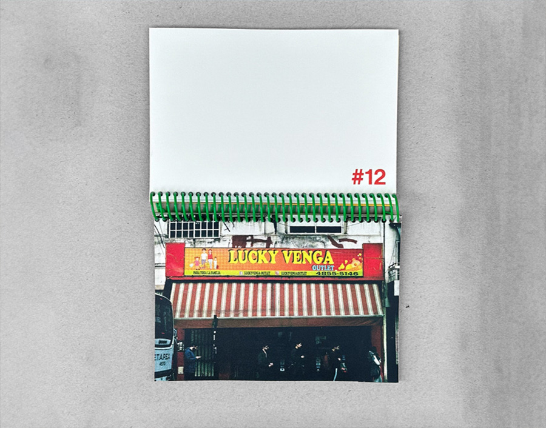

MM MALENA MEDUS
I. CARTELES CURIOSOS
Es el primer libro bajo el nombre de la editorial Azul Pantalla. Se trata de un fotolibro anillado tamaño A6 con 25 fotos analógicas de carteles irónicos e ingeniosos tomados en las calles de la Ciudad de Buenos Aires.
II. SIGO SIN ANIMARME
Sigo sin animarme forma parte de una serie de fanzines de escritorxs que publican por primera vez. Se trata de hacer evidente la energía de los textos a través de la imagen en risografía que no oculta sus imperfecciones.

III. TODOS LOS SENDEROS LLEVAN A BARILOCHE
Fanzine de 32 páginas que reconstruye la vida de un barilochense en 24 pasos a través de fotos familiares e imágenes de archivo del Club Andino Bariloche.
Franco nació en 1968 y creció en Bariloche. Sus pasiones incluyen la fauna y flora local, Los Ramones, el esquí, los Jeeps y disfrutar de sus tardes mirando el lago. También es un ávido recolector de tesoros. Un día, revolviendo entre revistas Pelo y catálogos de Ford encontramos una cajita con fotos de su juventud: expediciones a la montaña, tardes en la orilla del río y carreras en la nieve. A medida que las ibamos desplegando cronológicamente, se empezaban a juntar retazos de la historia de Franco, que, de manera especulativa, comenzamos a completar con suposiciones. “Todos los senderos llevan a Bariloche” es una reconstrucción de la juventud de Franco contada en 24 pasos.
Trabajo de Azul Pantalla Editorial.

IV. VAIVÉN
Desarrollo conceptual y gráfico de proyecto integral que cuenta con piezas gráficas, objetuales, audiovisuales y editoriales. El proyecto nace de la necesidad de registrar las identidades barriales para su conservación en el avance de la edificación dentro de la Ciudad Autónoma de Buenos Aires.
El patrimonio intangible, conformado por las actividades barriales, son el objeto de estudio y captura de este proyecto, el cual se pregunta sobre su paradero en el avance de las transformaciones barriales y el movimiento de quienes habitan sus calles. ¿Qué sucedería si el sentimiento se diluyera con el paso de los vecinos? ¿Cómo podría registrarse la identidad que conformó y hoy conforma cada barrio? ¿De qué forma se podría materializar este patrimonio?
Link de prototipo web en figma
Trabajo en conjunto con Candela García Sindes.